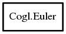

Euler
Object Hierarchy:

Description:
[ Compact ]
public class Euler
Represents an ordered rotation first of heading degrees around an object's y axis, then pitch degrees around an
object's x axis and finally roll degrees around an object's z axis.
<note>It's important to understand the that axis are associated with the object being rotated, so the axis also rotate in sequence
with the rotations being applied.</note>
The members of a Euler can be initialized, for example, with
init and cogl_euler_init_from_quaternion ().
You may also want to look at init_from_euler if you want to do
interpolation between 3d rotations.
Content:
Static methods:
Methods:
- public Euler copy ()
Allocates a new Euler and initilizes it
with the component angles of this.
- public void free ()
Frees a Euler that was previously allocated
using copy.
- public void init (float heading, float pitch, float roll)
Initializes this to represent a
rotation of x_angle degrees around the x axis, then y_angle degrees around the y_axis and z_angle
degrees around the z axis.
- public void init_from_matrix (Matrix matrix)
Extracts a euler rotation from the given matrix and
initializses this with the component x, y and z rotation angles.
- public void init_from_quaternion (Quaternion quaternion)
Initializes a this rotation with the
equivalent rotation represented by the given quaternion.
Fields: